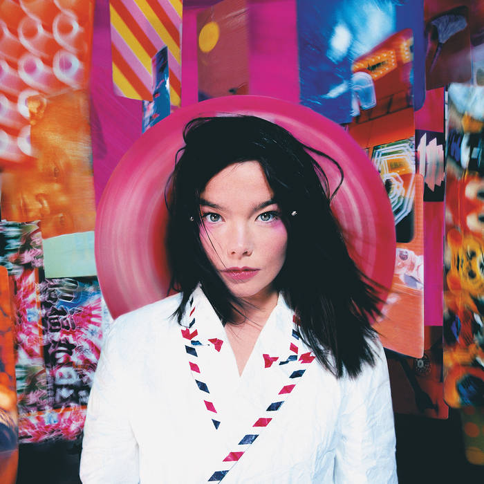

My Favourite Musical Artists
Listening to music is my favourite hobby. While I have a lot of artists I like to listen to, these three in particular are special to me:
Bjork

I'm drawn to her experimental pop sensibilities. With her 10 albums released so far, each album has had a particular dominant instrument: violin on 'Vulnicura', harp on 'Biophilia', flute on 'Utopia', clarinet on 'Fossora' or even the human voice on 'Medulla'. She has a very unique singing voice which may turn people off but it's what makes her stand out along with her poingant lyricism.
Back to topKendrick Lamar
His storytelling is the attribute I love the most about his music. Each album has a particular theme that he's exploring, and the style each album unfolds is different: 'Good Kid M.A.A.D City' is like a film, 'To Pimp a Butterfly' a poem, and 'Mr Morale and the Big Steppers' is a play for example. His album 'DAMN' was recognised for its ambition and won him a Pulitzer Prize becoming the first winner outside classical or jazz to win the prize.
Back to topAriana Grande
When it comes to mainstream pop music she's my favourite. I really love her melodies and her vocal range within her music is very impressive, she can sing in a very low register like on the songs 'pov,' or 'ghostin' and she can sing in a very high register that it sounds like whistle notes as on the songs 'imagine' and 'my hair.'
Back to top